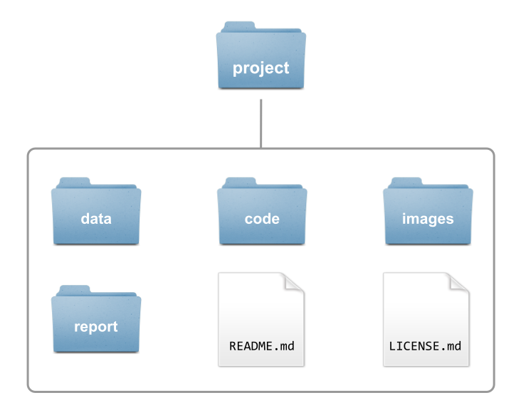
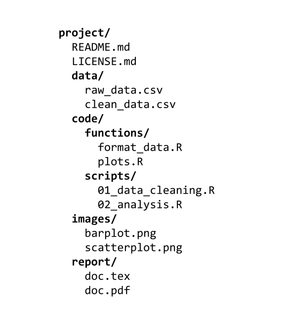
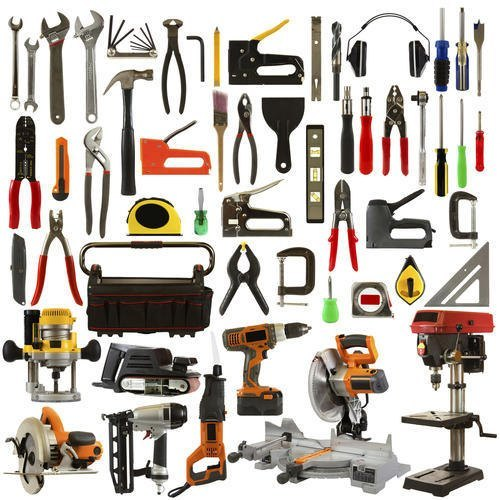
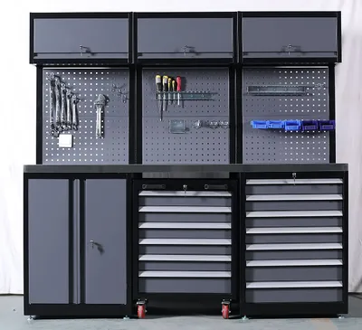
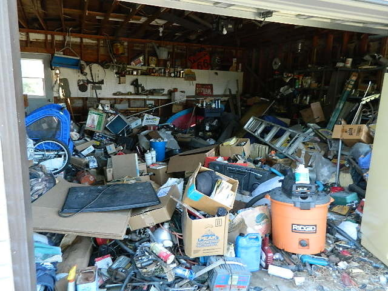

02:00
Project Organization
STAT 159: Collaborative and Reproducible Data Science
Yesterday’s Lab
- Met your GSI
- Installed software
- Git (windows users)
- Located and launched the Terminal
- Commands to navigate file system
pwd,ls,cd,mkdir,rmdir
- Commands to inspect files
head,tail,less,cat,wc
- Commands to manipulate files
touch,open,cp,mv,rm
Folder for STAT 159
You should have in your computer a dedicated directory (i.e. folder)
stat159/You should use this directory for all the work done in this class.
BTW: Your
Downloads/folder is not a replacement for astat159/folder.
Project Organization


Data science projects involve dealing with multiple files:
- some files will be inputs
- some files will be outputs
- some files will be data files
- some files will be image files
- some files will be script files (code)
- some files will be reports
- some files will play auxiliary roles
It’s important to have a good organization of files
An Analogy


An Analogy
Messy file system 😢

Neat file system 😍
File and Directory Organization
Project Organization
When starting a new project, it is worthwhile to spend some time thinking about how to best organize its content.
This means asking questions such as:
- What are my project inputs?
- What types of outputs do I expect to come out of this project?
- How does this project relate to other projects I am working on?
When you begin a new project …
It is generally a good idea to store all of the files relevant to one project under a common root directory.
The exception to this rule is source code or scripts that are used in multiple projects. Each such program might have a project directory of its own.
Golden rules
Raw data should never be changed. Save it into a
data/folder and treat it as immutable.The processed, clean version of your data will go into a dedicated
processed_data/orclean_data/folder.Anything that can be generated from code goes into its own folder.
output/folder- or separate folders for
output/files andfigures/
If there are text documents, put them in their own folder (e.g.,
docs/)
Golden rules (cont’d)
Code also has its own folder:
code/.- If you write a lot of functions, then create a
functions/folder - Or also a
src/(forsource) folder to save processing/analysis code.
- If you write a lot of functions, then create a
If processing/analysis scripts are meant to be used in a certain order, you can number them:
- e.g.,
script1-data-prepration.R,script2-exploratory-analysis.R,script3-regression-model.R, etc.
- e.g.,
Sometimes the pipeline is not linear but branched, so numbering may not always make sense.
Modularize your code: instead of having a giant script to run your entire analysis from data cleaning to final figures, break up your workflow into several short, single-purpose scripts with well-defined inputs and outputs.
Golden rules (cont’d)
A project directory should be a portable island.
It can be zipped up, moved to a different folder, sent to a colleague, or cloned onto a remote server …
… and every script still runs without modifying a single line of code.
Documentation
Documentation (README files)
Each of your projects should always be accompanied by a README file.
The README should contain all the information an outsider would need to understand what the project is all about:
- what are the inputs
- what are the outputs,
- where to find files within the project directory, etc.
The README is simply a text file, there’s nothing special to it.
- I like to write it in markdown syntax:
README.md
- I like to write it in markdown syntax:
Writing down everything about a project in a
README.mdcan be tedious, but it pays off.
README file(s)
- Record who the author/s is/are,
- the date the project was started,
- a description of what the project is for,
- describe important details
- (a
READMEfile is sort of a growing/living document)
Get in the habit of starting a project by creating a README file.
Also, you can include README files inside the project’s directories: e.g. a README for the data/ folder, or for the docs/ filder.
Some Comments
How you define a project is largely up to you.
It could be all the work you do on a given dataset,
Or all the work you do for a thesis or dissertation,
Or each manuscript could be its own project even if it uses the same dataset as a different project.
A Standard Project Template
Example
my-reproducible-project/
├── README.md <- High-level summary & instructions
├── LICENSE <- Data/code usage rights
│
├── data/
│ ├── raw/ <- IMMUTABLE raw data (read-only)
│ └── processed/ <- Cleaned, transformed datasets
│
├── code/
│ ├── 01_data-prep.R <- Step 1: Clean raw data
│ ├── 02_analysis.R <- Step 2: Fit statistical models
│ └── 03_figures.R <- Step 3: Render visual output
│
├── output/
│ ├── tables/ <- Exported CSV/LaTeX summary tables
│ └── figures/ <- High-res PNG/PDF plots
│
└── docs/ <- Paper drafts, reports, slide decksExample
Example
Spot as many sins as you can fig01_density_by_hour
Example
Example
traffic_project/
├── README.md <- Step-by-step instructions
├── data/
│ ├── raw/ <- Read-only original data
│ │ └── traffic_2026.csv
│ └── processed/ <- Script-generated clean data
│ └── 01_clean_traffic.rds
├── code/
│ ├── 01_clean_data.R
│ ├── 02_fit_models.R
│ └── 03_generate_figures.R
├── output/
│ └── figures/
│ └── fig01_density_by_hour.png
└── docs/
└── report.qmd